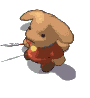
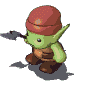
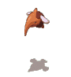

| 概要 | 情報 | アイテム一覧 |
| 敵キャラ一覧 | ステージ一覧 | 夢幻迷宮について |
| 攻略チャート | Zwei!! 攻略へ |
アイテムの種類
| ザコ1 | ザコ2 | ザコ3 | ザコ4 | ボス |
Zwei!!の敵キャラ一覧 「ザコ1」
| 名 前 | 画 像 | HP | 攻 撃力 | 耐 性 | 弱 点 | メ モ | 持 ち物 | 出 現場所 | 詳 細情報 | 通 し番号 |
| こぼると |  | 5 | 2 | 地 | ダンジョンで群れをなしてくらしている。 道具を扱う事が出来るものの不器用である。 |
キャンディー 1PN 3PN 5PN ギザ10PN |
カヤパの森 こぼるとの森1､2 パーヴェル庭園Lv1、Lv11、Lv20 ケノーピ火山Lv12 クロップ洞窟Lv2 アプリエスLv16、Lv17 セルペンティナLv20 |
体当たり1キャラ分 大砲を使用している場合は、爆弾かピピロの魔法で対処するとよい |
001 | |
| みずとびがめ | 16 | 3 | 水 | 火 | 水辺に住むモンスター。 元々は大人しい生物だが魔の力により凶暴化している。 |
おにぎり プリン 2PN 4PN 6PN |
パーヴェル庭園Lv1、Lv20 | 魔法1発(狙) | 002 | |
| まーまん | 20 | 4 | 水 | 火 | 勇敢なる半魚人の戦士。足腰が発達しており、跳躍力は尋常ではない。 槍の扱いに長けている。 |
たこやき 焼き鳥 3PN 5PN 10PN |
パーヴェル庭園Lv1、Lv20 | 体当たり1キャラ分 ジャンプ やり投げ(狙、貫通) |
003 | |
| ごぶりん |  | 40 | 3 | 地 | 風 | こぼるとの亜種。 暗い所を好み、夜目が利く。粗暴で頭は良くない。 |
おにぎり プリン 3PN 6PN 15PN |
クロップ洞窟Lv2、Lv20 | 体当たり2キャラ分 | 004 |
| ばっとくん | 40 | 3 | 地 | 風光 | コウモリのモンスター。 普段は闇に潜む。獲物を襲う時は超音波を用いる。 |
たこ焼き 焼き鳥 3PN 5PN 7PN |
クロップ洞窟Lv2、Lv20 | 魔法1発(狙) | 005 | |
| わーうるふ | 80 | 6 | 地 | 風 | 狼が魔の力により、亜人間化したもの。 両手の長い爪を生かし、標的を切り裂く。 |
プリン レンコン 4PN 5PN |
クロップ洞窟Lv2、Lv20 | 突進 体当たり3キャラ分 |
006 | |
| しろおこじょ | 80 | 6 | 風 | 地 | 知恵と、風を操る魔力を得たおこじょ。 鎌いたちをブーメランのようにして飛ばす。 |
たこ焼き 焼き鳥 3PN 4PN 10PN |
カヤパの森Lv3、Lv20 | 突進 かまいたち(衝突判定の範囲が異常なまでに狭い、狙) |
007 | |
| ぱっく | 80 | 6 | 風 | 地 | 見た目によらず凶暴。 可愛らしい外見に油断して近づくと、急に襲い掛かってくる。 |
プリン レンコン 3PN 5PN 10PN |
カヤパの森Lv3、Lv20 | 突進 | 008 | |
| ういざーど | 160 | 12 | 火 | 水 | 炎の魔法に卓越した下級魔族。 しかし動きは鈍重で接近戦が不得意である。 |
プリン レンコン 5PN 7PN 10PN |
ケノーピ火山Lv4、Lv20 | 魔法1発(狙) 魔法2発 |
009 | |
| ふぁどら |  |
160 | 12 | 火 | 水 | 羽が退化した竜の変種。 灼熱のブレスを吐きそれにふれると体がマヒしてしまう。 |
焼き鳥 チェリー 5PN 10PN 20PN |
ケノーピ火山Lv4、Lv20 | ブレス(狙、麻痺) 魔法2発 |
010 |
| ういっち | 240 | 21 | 地 | 水 | 魔女とも呼ばれている下級魔族。 雷の魔法を操る。 |
レンコン きすの天ぷら 15PN 50PN |
カヤパの森Lv4、Lv20 | 雷(麻痺) 魔法3発 |
011 | |
| あかおこじょ |  |
240 | 21 | 風 | 地 | 赤い羽織はおこじょの中の実力者たる証である。 鎌いたちを使う。 |
チェリー チョコレート 30PN 50PN 70PN |
カヤパの森Lv4、Lv20 | かまいたち(衝突判定の範囲が非常に狭い、狙) 突進 |
012 |
| くさびと | 240 | 21 | 風 | 地 | モンスター化した植物。 風の力で敵の自由を奪う能力を持っている。 |
焼き鳥 チェリー 50PN 60PN 70PN |
カヤパの森Lv5、Lv20 | 魔法4発(2回連続) 障壁(麻痺) 突進 高速退却 |
013 | |
| はろうぃん | 240 | 21 | 風 | 地 | カボチャに邪霊が宿ったもの。 口から放たれた魔法弾は火柱を起こす。 |
レンコン きすの天ぷら 60PN 70PN 80PN |
カヤパの森Lv5、Lv20 | 魔法3発(狙) 火柱(狙) 突進 魔法1発(狙) 高速退却 |
014 | |
| めすさるーん | 320 | 33 | 水爆 | 火 | モンスターと化してしまった雌サル。 頭に付けた花が愛らしい。 |
肉団子 アユ 10PN 20PN 30PN |
パーヴェル庭園Lv5、Lv20 | 体当たり1キャラ分 魔法1発(狙) 爆弾設置 |
015 | |
| あおとかげ | 320 | 33 | 水 | 火 | 水の悪魔の影響を受け、姿を変えたトカゲ。 攻撃時にはブレスを多彩に使い分ける。 |
チェリー チョコレート 65PN 70PN 100PN |
パーヴェル庭園Lv1､Lv5、Lv20 | 魔法2発(狙、連射) | 016 | |
| はさみん | 320 | 33 | 水 | 火 | 魔法のハサミを使って敵を切り裂こうとする低級魔族。 前面にいる敵は確認できない。 |
きすの天ぷら カレー 65PN 70PN 100PN |
パーヴェル庭園Lv5、Lv20 | ハサミ攻撃(6ヒットくらい) 目が合うと行動しない |
017 | |
| れっどじぇる | 320 | 33 | 無 | 水 | 腐った水が魔の力によって生命を得たもの。 水のバリアを張り、敵からの攻撃を防ぐ。 |
きすの天ぷら カレー 3PN 10PN 20PN |
ケノーピ火山Lv6、Lv20 カヤパの森Lv4 |
バリアー 体当たり2キャラ分 魔法1発(狙) 魔法2発 突進 |
018 | |
| ろーれらい | 320 | 33 | 火 | 風 | 溶岩の中に住む魚。 熱に強く、炎による攻撃は通じない。 |
チョコレート フランスパン 6PN 10PN 20PN |
ケノーピ火山Lv6、Lv20 | 突進 魔法1発(狙) |
019 | |
| びー | 400 | 48 | 地火 | 水 | ハチと似た姿を取るモンスター。集団で行動する。 毒性のある針を飛ばす。 |
チョコレート フランスパン 15PN 50PN 70PN |
ダプネ砂漠Lv7 クロップ洞窟Lv15 ケノーピ火山Lv20 |
針飛ばし1発(毒) 体当たり3キャラ分 接触(麻痺) |
020 | |
| こかとり |  | 400 | 48 | 火 | 水 | 特徴的なくちばしを持つ小さな魔鳥。 それに触れたものは石と化してしまう。 |
カレー かつおぶし 30PN 50PN |
ダプネ砂漠Lv7 ケノーピ火山Lv6、Lv8、Lv20 |
突進 ブレス(狙、石化) 接触(石化) |
021 |
| いふりーと | 520 | 54 | 水凍 | 下顎に生えた2本の牙が目を引くハ虫類。 その口から吐き出される業火は強力である。 |
フランスパン プックベリー 15PN 20PN 50PN |
ケノーピ火山Lv7、Lv8、Lv20 | 魔法10発(乱射) 魔法2発 ブレス(狙) 突進 |
022 | ||
| わーらびっと | 480 | 54 | 火 | 水 | ウサギが亜人間化したものであって、着ぐるみではない。 知能は高くない。 |
かつおぶし 肉団子 3PN 20PN 50PN |
ケノーピ火山Lv8、Lv20 | 突進 体当たり3キャラ分 |
023 | |
| おーく | 480 | 54 | 火 | 地 | 亜人間化したブタ。 3叉の槍を備えて突撃したり、槍を投げるなど多彩な攻撃を行う。 |
カレー かつおぶし 60PN 70PN 100PN |
ケノーピ火山Lv7、Lv20 | 突進 体当たり3キャラ分 やり投げ(狙、貫通) |
024 | |
| あかとかげ | 440 | 54 | 水凍 | 火の悪魔の影響を受け、姿を変えたトカゲ。 巧みに攻撃を使い分け敵を追い詰めていく。 |
フランスパン プックベリー 65PN 70PN 100PN |
ケノーピ火山Lv7、Lv20 | 魔法1発(狙) 魔法2発 魔法4発(狙、連射) |
025 | ||
| ういんどら | 600 | 63 | 風 | 地 | 風の中を自由に泳ぎまわる竜の変種。 その吐息は毒性が強いため注意が必要。 |
かつおぶし 肉団子 5PN 6PN 10PN |
カヤパの森Lv8、Lv20 | ブレス(毒、狙) 魔法3発(狙) |
026 | |
| めたるじぇる | 560 | 63 | 地 | 邪悪な魔術師によって生命を与えられた水銀。 正確は凶暴で、敵を執拗に攻撃する。 |
かつおぶし 肉団子 50PN 70PN 100PN |
カヤパの森Lv5、Lv8、Lv20 | バリアー 突進 魔法1発(狙) 魔法3発(狙) 体当たり |
027 | ||
| おすさるーん | 520 | 63 | 風爆 | 地 | モンスターと化してしまった雄サル。 爆弾を敵に投げつける。 |
プックベリー バナナ 50PN 100PN |
カヤパの森Lv8、Lv10、Lv20 | 爆弾 体当たり3キャラ分 |
028 | |
| はたきめいど | 560 | 63 | 地 | 風 | プシュケの趣味シリーズその1。 1体の製作費は約100万ペンネ。 |
プックベリー バナナ 20PN 30PN 50PN |
プシュケのダンジョンLv9、Lv20 | 魔法1発(狙、混乱) 魔法2発(混乱) 魔法3発(狙、混乱) 突進 体当たり2キャラ分 接触(混乱) |
029 | |
| ほうきめいど | 800 | 90 | 火 | 水 | プシュケの趣味シリーズその2。 1体の製作費は約80万ペンネ。 |
肉団子 アユ 20PN 30PN 50PN |
プシュケのダンジョンLv9 パーヴェル庭園Lv20 |
魔法2発(混乱) 魔法4発(混乱) 体当たり3キャラ分 突進 接触(混乱) |
030 | |
| 名 前 | 画 像 | HP | 攻 撃力 | 耐 性 | 弱 点 | メ モ | 持 ち物 | 出 現場所 | 詳 細情報 | 通 し番号 |
情報が入り次第、随時更新します
アイテムの種類
| ザコ1 | ザコ2 | ザコ3 | ザコ4 | ボス |
| 概要 | 情報 | アイテム一覧 |
| 敵キャラ一覧 | ステージ一覧 | 夢幻迷宮について |
| 攻略チャート | Zwei!! 攻略へ |
Zwei!!
| 目次へ戻る | ページの上部へ |